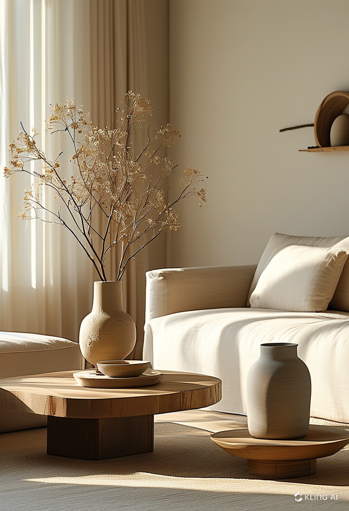
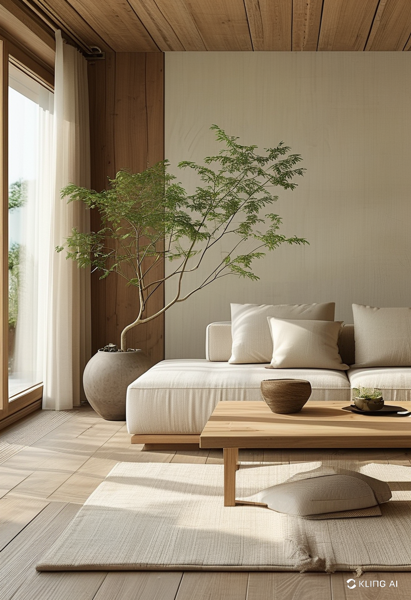
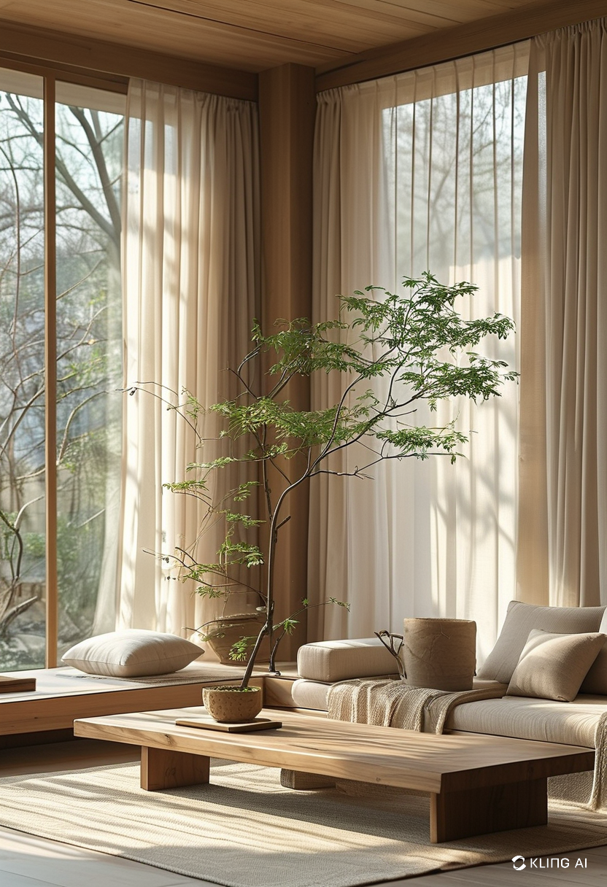
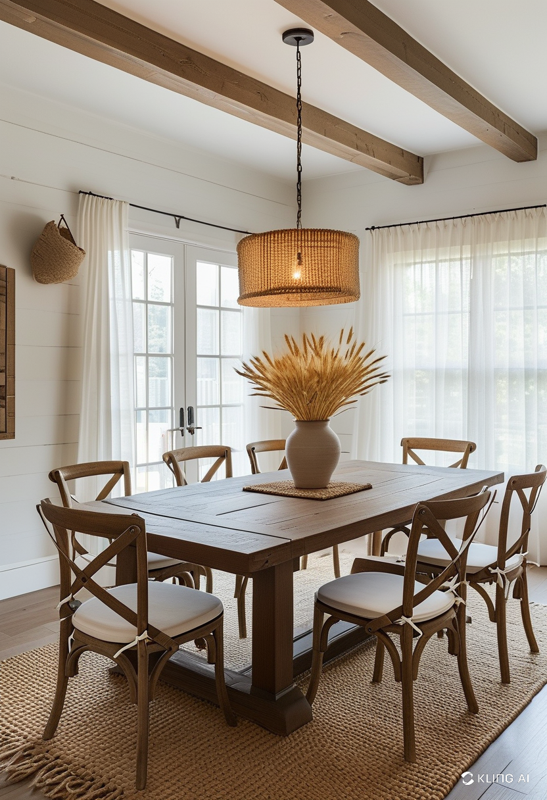
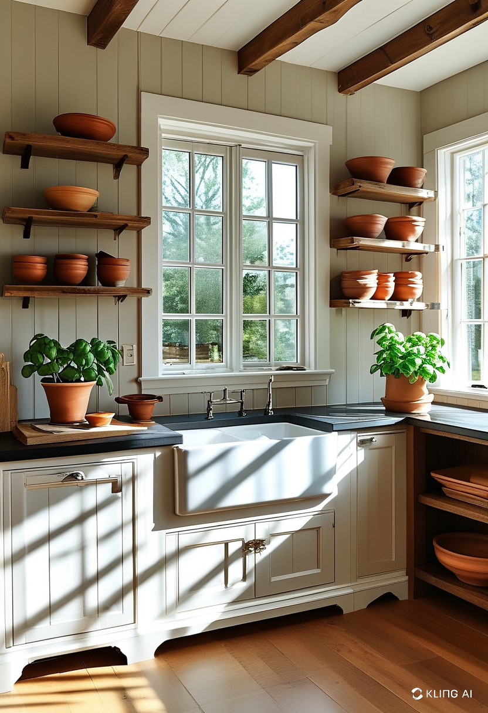
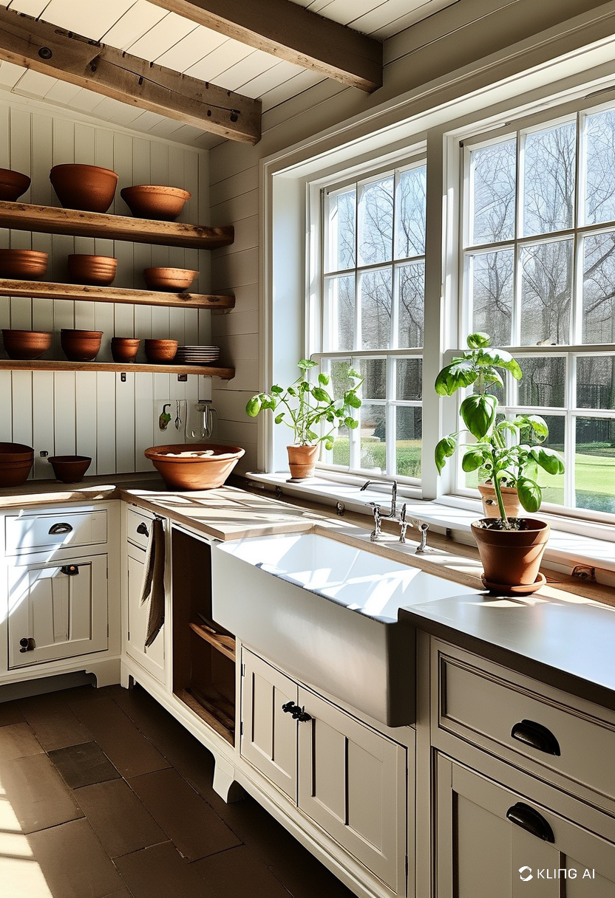

Warm minimalism is an interior design trend that blends simplicity with a cozy atmosphere. Unlike traditional minimalism, which can feel cold and sterile, warm minimalism incorporates soft textures, earthy tones, and natural materials to create a welcoming environment. This approach makes your home feel both uncluttered and inviting.
A crucial aspect of warm minimalist home decor is selecting the right colors. Neutral shades such as beige, taupe, warm gray, and off-white set the foundation for a serene space. These hues promote relaxation and enhance natural light. Adding subtle earthy tones like terracotta, olive green, or soft browns can introduce depth and warmth without overpowering the minimalist aesthetic.
To achieve a cozy yet minimal look, natural materials play a key role. Wood, stone, linen, and wool add texture and warmth to the space. Wooden furniture with clean lines, woven rugs, and cotton or linen drapes help create a harmonious balance. Incorporating plants also brings an organic feel, improving air quality while adding a pop of color.
Warm minimalist decor embraces function without sacrificing beauty. Each furniture piece should serve a purpose while maintaining a sleek and simple design. Opt for multi-functional furniture like storage ottomans, modular sofas, or streamlined shelving units. Choosing quality over quantity ensures longevity and keeps spaces uncluttered.
Since minimalism often relies on a restrained color palette, layering different textures is essential to prevent a flat or cold look. Soft wool throws, plush cushions, ceramic vases, and handcrafted pottery add depth and dimension. Mixing smooth and rough textures creates a tactile experience that enhances comfort.
A warm minimalist home thrives on natural light. Large windows, sheer curtains, and strategically placed mirrors can amplify brightness and make rooms feel more open. Decluttering and arranging furniture to optimize space further contribute to an airy and tranquil ambiance.
Minimalism does not mean a lack of personality. Instead of overcrowding shelves with decorative objects, choose a few meaningful pieces that reflect your taste. Artwork, framed photographs, or carefully curated books add character without disrupting the minimalist flow. Handmade or vintage pieces can also introduce a sense of warmth and uniqueness.
Warm and minimalist home decor is about creating a space that feels both stylish and inviting. By incorporating natural elements, thoughtful color palettes, functional furniture, and layered textures, you can achieve a perfect balance between simplicity and warmth. This design approach fosters a peaceful, clutter-free environment where you can truly relax and unwind.
     